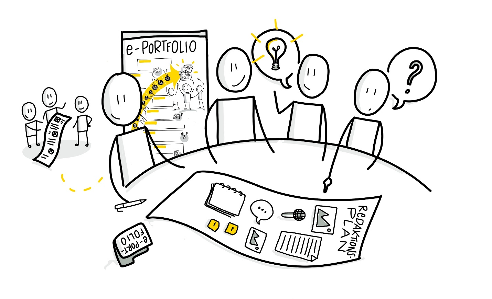

Lernbereich 6 - Themenplan
Lernbereich 6 - Themenplan
Aufbereitung eines (redaktionellen) Themenplans und Veröffentlichen weiterer (Reflexions-)Beiträge mit potenziellem Austausch (mit Bezug zum Content Curation Circle Guide - Wochen 10-11)
Struktur:
Woche 10
- A) Austausch über das bisherige Feedback der entstandenen Kontakte
- B) Themenideen verfeinern und gemeinsam in einem Voting über die Relevanz abstimmen
- C) Ideen für Themen gemeinsam diskutieren und in eine erste Reihenfolge bringen
Woche 11
- D) Vorstellen des bisherigen überarbeiteten Themenplans
- E) Feedback nehmen und geben
- F) Community-Austausch fördern

Woche 10 - Themensammlung
A) Austausch über das bisherige Feedback der entstandenen Kontakte | (ca. 20 Minuten)
Ihr habt in den letzten beiden Wochen Experten / Kontakte für Euer Thema ermittelt und kontaktiert. Was habt Ihr gelernt? Wie viel Rückmeldungen habt Ihr bekommen? Habt Ihr neue Erkenntnisse gewonnen? Reflektiert in der Gruppe und stellt Euch gegenseitig Fragen, um Euer Thema so tief und umfassend wie möglich zu durchdringen. Ihr könnt dafür folgende Aspekte zur Strukturierung Eures Austauschs nutzen:
- Meine drei Top-Experten und ihre Kernaspekte
- Aufzählung der wichtigsten Teilaspekte für mein Thema
- Dieses Wissen fehlt mir (noch)
B) Themenideen verfeinern und gemeinsam in einem Voting über die Relevanz abstimmen | (ca. 20 Minuten)
Schaut zusammen über die ermittelten Themenideen der vergangenen Wochen. Vergebt Euch gegenseitig Stimmen, welcher Teilbereich oder welche Facette am relevantesten ist und daher zuerst oder bewusst an späterer Stelle angegangen werden sollte. Pro Themenidee kann dabei jedes Circle-Mitglied bis zu 3 Punkte vergeben.
C) Ideen für Themen gemeinsam diskutieren und in eine erste Reihenfolge bringen | (ca. 20 Minuten))
Anhand der Stimmenvergabe könnt Ihr Euch gegenseitig begründen, warum Ihr für bestimmte Themen besonders viele, wenige oder gar keine Punkte vergeben habt. Aus dieser weiterführenden Themendiskussion kann jeder von Euch für seine Themen nun wertvolle Erkenntnisse und Schlüsse über die zeitliche und fachliche Einordnung in den Plan ziehen.
Basic-Kata für diese Woche (ca. 1 Stunde):
Verfeinert die Themen aus dem Circle und erstellt für die kommende Woche eine überdachte Reihenfolge als (redaktionellen) Plan. Beginnt mit einer ersten Recherche und Ausarbeitung für das aus Eurer Sicht nächste anstehende Thema.
Vertiefungs-Kata für diese Woche (ca. 1 Stunde):
Überlegt Euch Fragestellungen, die Ihr im Rahmen Eurer Themenbeiträge an die Community Eures ePortfolios stellen könntet und entwickelt weiterführende Umsetzungsideen für Inhalte Eurer zukünftigen Beiträge (z.B. für Texte, Infografiken oder Kurzvideos).
Week 11 - Austausch fördern
D) Vorstellen des bisherigen überarbeiteten Themenplans | (ca. 25 Minuten)
Auf der Basis der vergangenen Woche stellt Ihr Euch im Circle reihum nun Eure Themenpläne gegenseitig vor und beschreibt auch die Grundüberlegungen für die Reihenfolge und verschiedenen Facetten genauer. Ggf. können sogar gemeinsame Themenpläne entstehen. Geht auch darauf ein, inwiefern das Circle-Ranking anhand der Stimmenvergabe letztlich mit eingeflossen ist oder warum Ihr Euch ggf. bewusst dagegen entschieden habt.
E) Feedback nehmen und geben | (ca. 15 Minuten)
Während oder direkt nach der gegenseitigen Vorstellung der jeweiligen Themenpläne, gebt Euch untereinander finale Rückmeldungen oder ergänzende Tipps zu den verschiedenen Themen. So könnt Ihr sicherstellen, dass Euer Vorgehen und Eure Planung auch aus den Augen potenzieller Besucher Eures ePortfolios als sinnvoll und motivierend wahrgenommen wird.
F) Community-Austausch fördern | (ca. 20 Minuten)
Macht Euch schließlich gemeinsam Gedanken darüber, welche Fragestellungen Ihr als Teil der Themenbeiträge an Eure Community richten könntet, um den Austausch und die Weiterentwicklung Eures Themas zu fördern. Gleichzeitig könnt Ihr auch Ideen für mögliche Maßnahmen oder begleitende Aktionen entwickeln, die ein Community-Feedback unterstützen.
Basic-Kata für diese Woche (ca. 1 Stunde):
Erstellt Euren vorläufig finalisierten Redaktionsplan für Eure Themen der kommenden Monate. Natürlich kann dieser jederzeit angepasst werden, wenn sich Prioritäten für ein bestimmtes Thema verschieben, aber dieser soll Euch als wichtige Richtschnur helfen und Orientierung bieten. Veröffentlicht diesen Plan oder bereits einen zweiten Themenbeitrag mit Fragen an Eure Community, wenn Ihr möchtet.
Vertiefungs-Video-Kata für diese Woche (ca. 1 bis 2 Stunden):
Erstellt eine kleine Video-Podcast-Episode, in dem Ihr Euren Themenplan kurz vorstellt und auf Besonderheiten / Highlights eingeht und veröffentlicht ihn in Eurem ePortfolio.